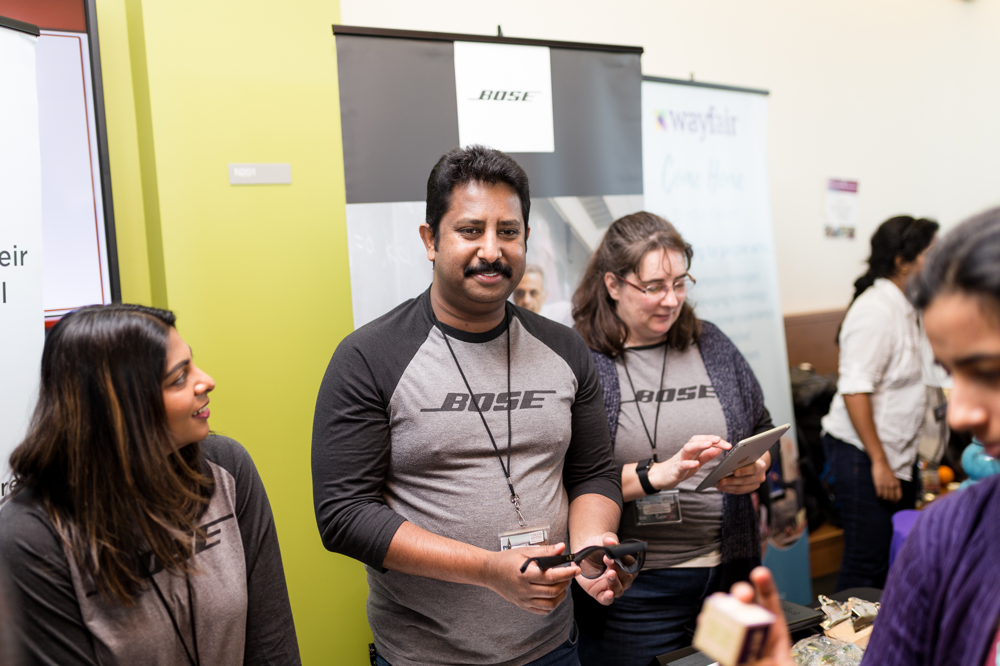
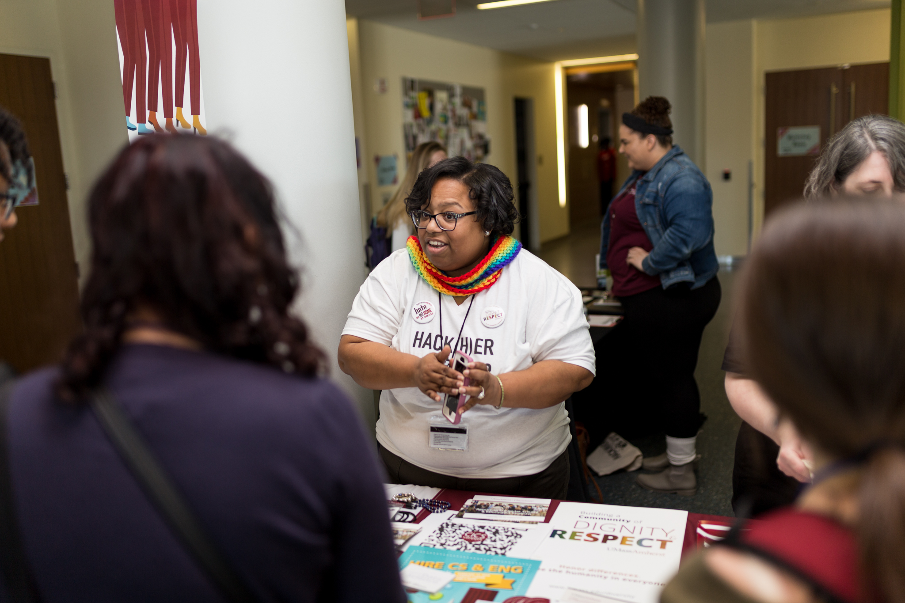

Organizers

Organizers are responsible for raising money, planning and putting on the Hack(H)er413 event every year. The team is responsible for raising money from sponsorship companies, marketing, planning mini events throughout the hackathon such as workshops & panels, etc. Organizers are looking to make the event better every year and want to hear suggestions and use suggestions to do that. Organizers are all female and non binary students at the University of Massachusetts. They are currently studying for their Bachelors, Masters or PhD’s. They have little to no work experience.
Sponsors
-

Sponsors refer to the companies who gave the funds that the Hack(H)er event needed. They are mainly HR recruiters and few engineers who are also allowed certain perks based on the amount donated. Some perks include having a table at the career fair or holding a workshop demonstrating a company product or software. The sponsors are also allowed to interview participants during the hackathon in order to find full time employees or summer interns. They also are allowed to add special prizes according to their company’s software such as Best Use of the company’s API and more. The sponsors sometimes provide goodies as well. But their main aim is to provide the much needed funds to improve the hackathon experience and attract attendees.
Diversity Specialists
-

Diversity specialists are working professionals in the diversity & inclusion space. They can work in the academic or industry setting. Their job is to determine the diversity of various groups and attract candidates from various backgrounds. In the case of Hack(H)er413, these specialists want to be able to look at the breakdown of age, gender identity, race/ethnicity, and socioeconomic background to determine where to provide resources to their company or to the organizers in the future. These specialists have a Bachelor’s or Master’s degree. These specialists have skills in Excel and in doing research, but they have little to no experience with programming. These specialists have worked in the professional setting for 5+ years.